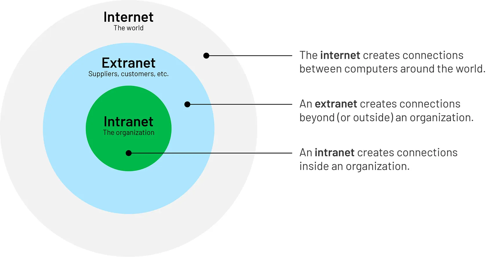

Intranets & Extranets

What is an Intranet?
A private network used within an organisation. It uses the same technology as the internet but is only accessible to authorised users such as employees.
Key Facts
- Not accessible to the general public.
- Used to share internal documents, news, and tools.
What is an Extranet?
An extension of an intranet that allows limited access to specific features to outside users.
Key Facts
- Sits between a private intranet and the public internet.
- Outside users need login credentials to access it.
Intranet vs. Extranet vs. Internet
- Internet - Public. Open to everyone.
- Intranet - Private. Internal users only.
- Extranet - Semi-private. Selected external users allowed.
Real World Examples
- Intranet - A company's internal HR portal for employees.
- Extranet - A supplier logging in to check a company's stock levels.